![]()
# 2 Looking at our data and getting set up--------------------------------------
# 3 Building our plot-----------------------------------------------------------
## Challenge 1------------------------------------------------------------------
# Modify the plot we’ve made so that you can see the relationship between life
# expectancy and year.
## Challenge 2------------------------------------------------------------------
# Modify to color your points by continent.
# 4 Adding more layers----------------------------------------------------------
## Challenge 3------------------------------------------------------------------
# Change the order of the point and line layers - what happens?
# 5 Transformations and statistics----------------------------------------------
## Challenge 4A-----------------------------------------------------------------
# Modify the color and the size of the points in the previous example.
# You’ll also probably want to make the linewidth less ridiculous.
## Challenge 4B-----------------------------------------------------------------
# Modify the plot from 4A so points are a different shape
# and colored by continent with new trendlines
# 6 Multi-panel figures---------------------------------------------------------
# 7 Modifying text--------------------------------------------------------------
# 8 Adjusting theming-----------------------------------------------------------
# 9 Exporting a plot------------------------------------------------------------
## Challenge 5------------------------------------------------------------------
# Create some box plots that compare life expectancy between the continents over
# the time period provided. Try and make your plot look nice, add labels
# and adjust the theme!Creating publication quality graphics with ggplot2
In this episode, we will learn about how to create publication-quality graphics in R using the tidyverse package ggplot2. Plotting data is a very quick and easy way to understand the relationship between your variables.
1 The grammar of graphics
The package ggplot2 applies a framework for plotting such that any plot can be built from the same basic building blocks. This very popular package is based on a system called the Grammar of Graphics by Leland Wilkinson which aims to create a grammatical rules for the development of graphics. It is part of a larger group of packages called “the tidyverse.”
The “gg” in ggplot stands for “grammar of graphics” and all plots share a common template. This is fundamentally different than plotting using a program like Excel, where you first pick your plot type, and then you add your data. With ggplot, you start with data, add a coordinate system, and then add “geoms,” which indicate what type of plot you want. A cool thing about ggplot is that you can add and layer different geoms together, to create a fully customized plot that is exactly what you want. If this sounds nebulous right now, that’s okay, we are going to talk more about this.
Simplified, we will provide to R:
- our data
- aesthetics mapped to variables - what connects the data to the graphics
- layers - determine which type of plot we are going to make, what coordinate system we will use, what scales we want, and other important aspects of our plot
You can think about a ggplot as being composed of layers. You start with your data, and continue to add layers until you get the plot that you want. This might sound a bit abstract so I am going to talk through this with an example.
2 Looking at our data and getting set up
2.1 Setting up
To make it easier to keep track of what we do, we’ll write our code in a script (and send it to the console from there) – here is how to create and save a new R script:
Open a new R script (Click the
+symbol in toolbar at the top, then clickR Script)1.Save the script straight away as
ggplot.R– you can save it anywhere you like, though it is probably best to save it in a folder specifically for this workshop.If you want the section headers as comments in your script, as in the script I am showing you now, then copy-and-paste the following into your script:
Section headers for your script (Click to expand)
Before we plot, let’s look at the data we will use for this session. We are going to use the same gapminder data from one hour ago.
In case you don’t have it up from before, let’s load both the tidyverse and gapminder using the function library() so they are active.
library(tidyverse)── Attaching core tidyverse packages ──────────────────────── tidyverse 2.0.0 ──
✔ dplyr 1.2.1 ✔ readr 2.2.0
✔ forcats 1.0.1 ✔ stringr 1.6.0
✔ ggplot2 4.0.3 ✔ tibble 3.3.1
✔ lubridate 1.9.5 ✔ tidyr 1.3.2
✔ purrr 1.2.2
── Conflicts ────────────────────────────────────────── tidyverse_conflicts() ──
✖ dplyr::filter() masks stats::filter()
✖ dplyr::lag() masks stats::lag()
ℹ Use the conflicted package (<http://conflicted.r-lib.org/>) to force all conflicts to become errorslibrary(gapminder)We can use the function View() to look at our data. This opens our data sort of like how we might view it in Excel.
View(gapminder)We can also use the function str() or glimpse() to look at the structure of our data.
str(gapminder)tibble [1,704 × 6] (S3: tbl_df/tbl/data.frame)
$ country : Factor w/ 142 levels "Afghanistan",..: 1 1 1 1 1 1 1 1 1 1 ...
$ continent: Factor w/ 5 levels "Africa","Americas",..: 3 3 3 3 3 3 3 3 3 3 ...
$ year : int [1:1704] 1952 1957 1962 1967 1972 1977 1982 1987 1992 1997 ...
$ lifeExp : num [1:1704] 28.8 30.3 32 34 36.1 ...
$ pop : int [1:1704] 8425333 9240934 10267083 11537966 13079460 14880372 12881816 13867957 16317921 22227415 ...
$ gdpPercap: num [1:1704] 779 821 853 836 740 ...gapminder is a tibble (very similar to a data frame), comprised of 1,704 rows and 6 columns. The columns are:
country(a factor)continent(a factor)year(an integer)lifeExp(a number)pop(an integer)
We are going to use the function ggplot() when we want to make a ggplot.
TipThe function vs the package
Note, the function is called ggplot() and the package is called ggplot2.
If we want to learn how the function works, we can use the ? to find out more. Running the code below will open up the documentation page for the function ggplot() in the bottom right “Help” quadrant of RStudio.
?ggplot()3 Building our plot
We can start by providing the data as the first argument to ggplot().
ggplot(data = gapminder)
We have a blank plot! We haven’t given enough information for R to know what we want to plot - we have simply told R what dataframe we will be using. We are getting the first “base” layer of the plot.
Instead of providing the dataframe as the first argument to ggplot(), we can use the pipe |> (or the old pipe %>% that you might see around, which works in the exact same way) that Jelmer taught us about. This “sends” the data into the next function. I will use this syntax for the rest of the workshop.
gapminder |>
ggplot()
Note
ggplot(data = gapminder) and gapminder |> ggplot() are the same thing.
If we want to make a scatterplot to understand the relationship between GDP per capita (i.e., gdpPercap) and life expectancy (i.e., lifeExp), we can do so by setting x and y respectively within aes(), or our aesthetic mappings.
gapminder |>
ggplot(mapping = aes(x = gdpPercap, y = lifeExp))
Ok! We don’t have a plot, per se, but we have more than we had before. We can now see that gdpPercap is on the x-axis (along with some numbers reflecting the range of our data), and lifeExp is on the y-axis (along with some numbers reflecting the range of our data).
Note
Note that the “mapping” part is actually not necessary.
gapminder |>
ggplot(aes(x = gdpPercap, y = lifeExp))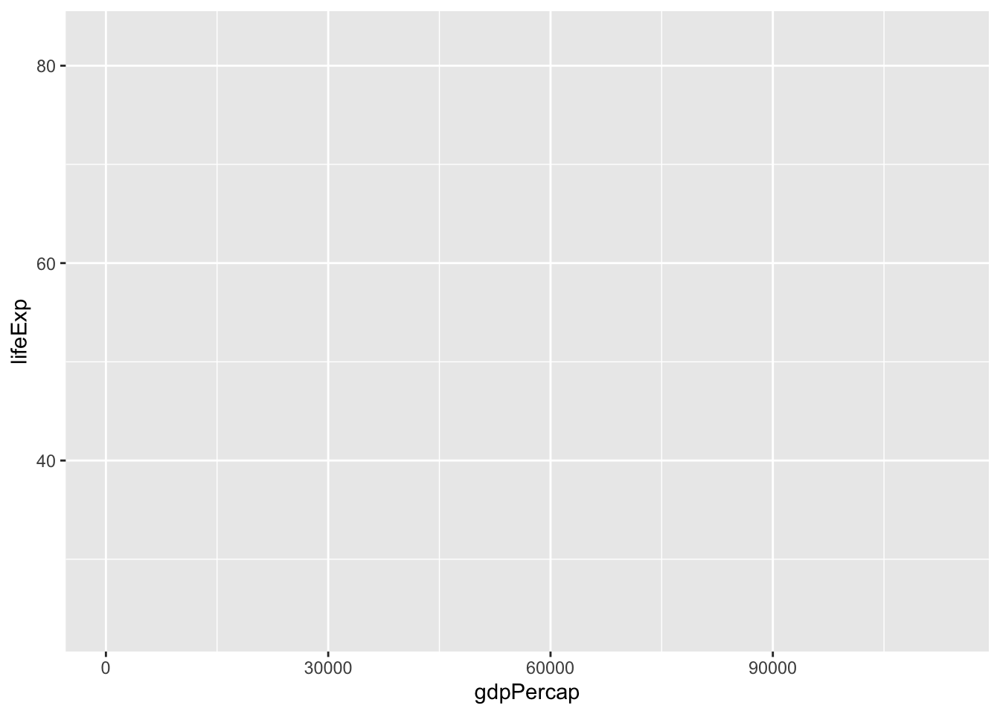
Now we need to tell R what geometry, or “geom” want to use. All of the “geoms” start with geom_*(), and we can see what they all are by starting to type geom and pressing tab.
Let’s make a scatterplot here.
gapminder |>
ggplot(aes(x = gdpPercap, y = lifeExp)) +
geom_point()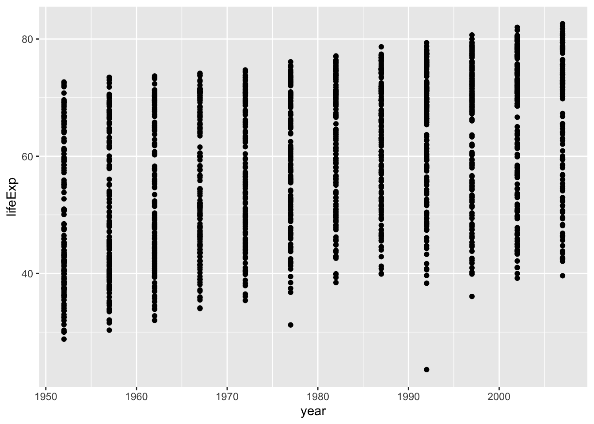
3.1 Challenge 1
Challenge 1: Modifying a plot
You can run the code below here on the website by clicking the Run Code button!
Modify the plot we’ve made so that you can see the relationship between life expectancy and year. Once you have your answer, feel free to try them out to see what happens.
Try mapping x = year and y = lifeExp.
Adjust the existing plot by mapping x = year and y = lifeExp, and use geom_point() since we want a scatterplot. We pipe the dataframe gapminder to provide the underlying data for creating the plot.
gapminder |>
ggplot(aes(x = year, y = lifeExp)) +
geom_point()
Note the plot looks a little weird since each point is a country, so for every year, we have an average life expectancy for each country.
3.2 Challenge 2
Challenge 2: Coloring by a variable
You can run the code below here on the website by clicking the Run Code button!
Modify your plot to color your points by continent.
Try using the argumentcolor within your aesthetic mappings.
Try setting color = continent within your aesthetic mappings.
Adjust the existing plot by adding color = continent to color observation based on its value in the column continent.
gapminder |>
ggplot(aes(x = year, y = lifeExp, color = continent)) +
geom_point()
You can better see here that each point is actually a different country now that they are colored by continent.
4 Adding more layers
Instead of making a scatter plot, we might want to make a line plot. Using ggplot this is as easy as changing out your geom.
gapminder |>
ggplot(aes(x = year, y = lifeExp, color = continent)) +
geom_line()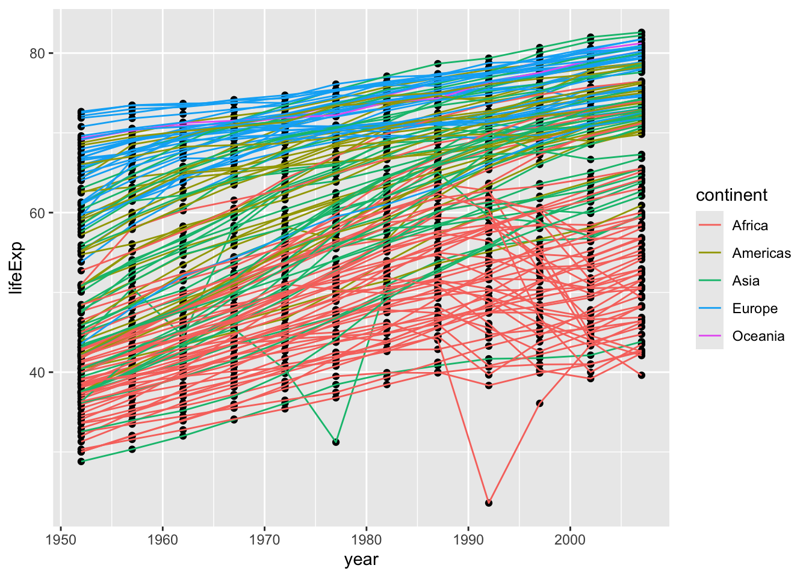
The plot is jumping around a lot since for each year, we have life expectancy data for each country. Our plot here is not a summary of that data, but instead all of that data together, on top of itself.
We might want to have one line for each country, we can do this by specifying group = country within our aesthetic mappings.
gapminder |>
ggplot(aes(x = year, y = lifeExp, color = continent, group = country)) +
geom_line()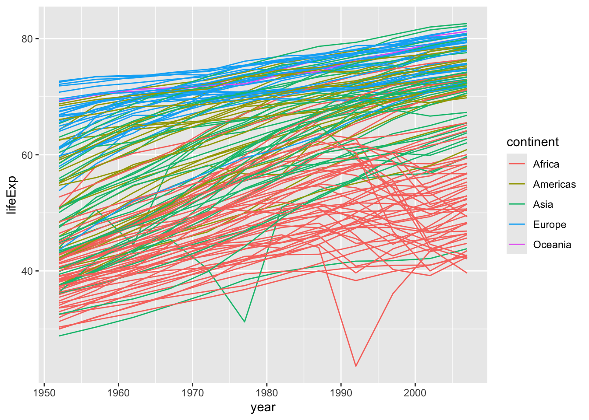
A nice thing about ggplot is that you don’t actually need to decide if you want to have lines or points, you can have both!
gapminder |>
ggplot(aes(x = year, y = lifeExp, color = continent, group = country)) +
geom_line() +
geom_point()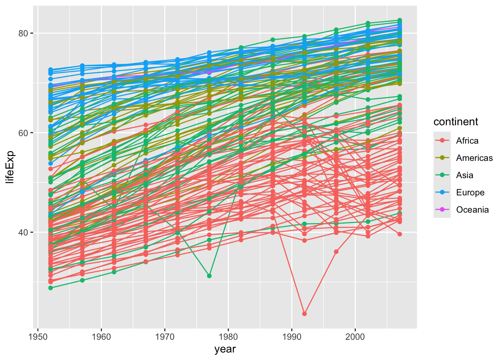
Now we see a point for each observation and each point and line is colored based on continent.
You can also set your mappings globally (within ggplot()) or locally (within a specific geom). Let’s see what the difference is. Let’s see what happens when we move color = continent into geom_point(aes(color = continent)).
gapminder |>
ggplot(aes(x = year, y = lifeExp, group = country)) +
geom_point(aes(color = continent)) +
geom_line()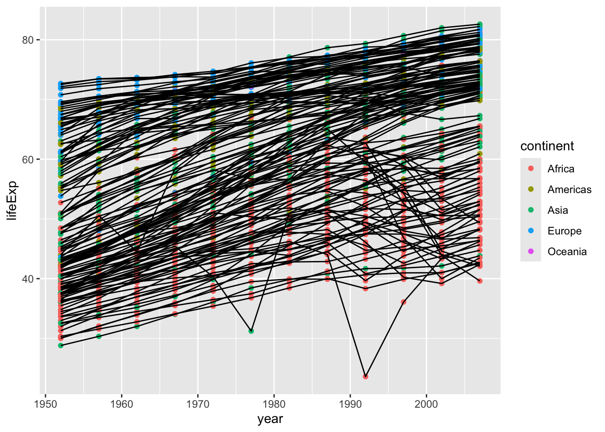
We can see that now only the points are colored by continent, and the lines are all black (the default color for one group).
4.1 Challenge 3
Challenge 3: Adjusting code order
You can run the code below here on the website by clicking the Run Code button!
Change the order of the point and line layers - what happens?
Code is run in the order it is provided, with each subsequent layer placed on top of the one that came before. So, when you write your code with points first, then lines lower down, the lines will be on top of the points.
We can see that in this situation since color is mapped only to the geom_point() layer.
5 Transformations and statistics
Sometimes we might want to apply some kind of transformation to our data while plotting so we can better see relationships between our variables.
Let’s start with a base plot to see the relationship between GDP per capita (gdpPercap) and life expectancy (lifeExp).
gapminder |>
ggplot(aes(x = gdpPercap, y = lifeExp)) +
geom_point()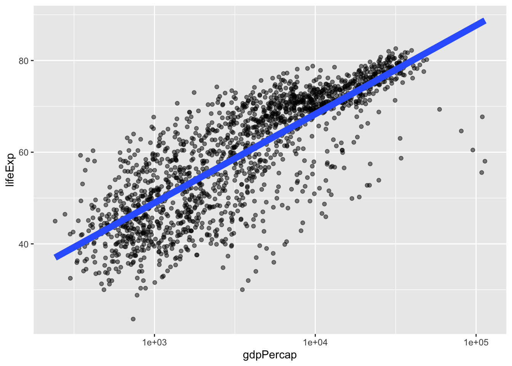
The presence of some outliers for gdpPercap make it hard to see this relationship. We can try log base 10 transforming the x-axis to see if this helps using a scale_*() function.
gapminder |>
ggplot(aes(x = gdpPercap, y = lifeExp)) +
geom_point() +
scale_x_log10() # log 10 scales the x axis
I can also make our points a little bit transparent to ease our overplotting problem (where too many point are on top of each other, making each point hard to see) by setting alpha =. Alpha ranges from 0 (totally transparent) to 1 (totally opaque). Note that I alpha = 0.5 outside the aes() function - we are not mapping alpha to some variable, we are simply setting what alpha should be.
gapminder |>
ggplot(aes(x = gdpPercap, y = lifeExp)) +
geom_point(alpha = 0.5) + # not inside aes
scale_x_log10() # log10 transform the x-axis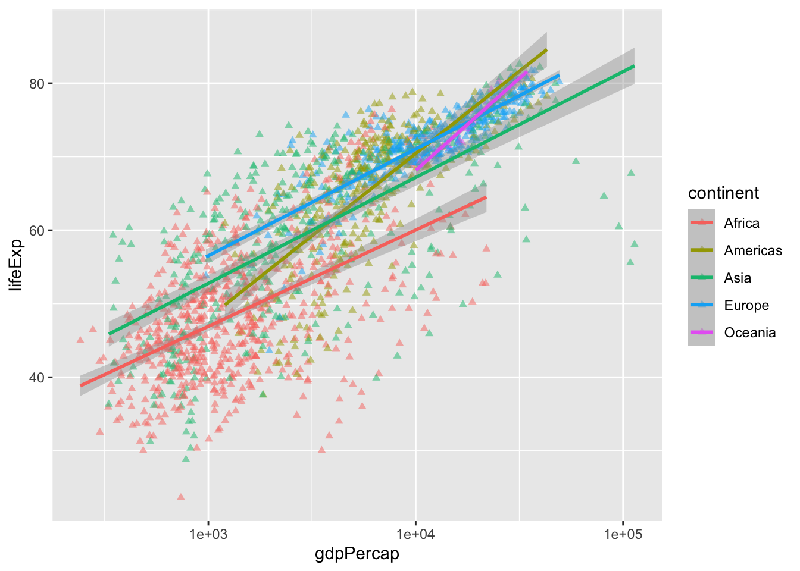
Now we can better see the parts of the plot that are very dark are where there are a lot of data points.
We can also add a smoothed line of fit to our data by setting method = "lm" within geom_smooth() to fit a linear model.
gapminder |>
ggplot(aes(x = gdpPercap, y = lifeExp)) +
geom_point(alpha = 0.5) + # not inside the aes
scale_x_log10() +
geom_smooth(method = "lm") # smooth with a linear model ie "lm"`geom_smooth()` using formula = 'y ~ x'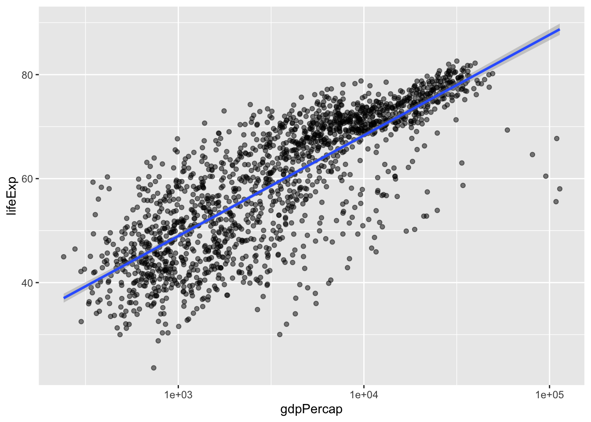
We can adjust the thickness of the line by setting linewidth within geom_smooth(), and turn off the confidence interval by setting se = FALSE.
gapminder |>
ggplot(aes(x = gdpPercap, y = lifeExp)) +
geom_point(alpha = 0.5) + # not inside the aes
scale_x_log10() +
geom_smooth(
method = "lm", # smooth with a linear model ie "lm"
linewidth = 3, # increase thickness of the line
se = FALSE
) # turn off plotting of a confident internal`geom_smooth()` using formula = 'y ~ x'
5.1 Challenge 4A
Challenge 4A: Modifying color and size
You can run the code below here on the website by clicking the Run Code button!
Modify the color and the size of the points in the previous example. You’ll also probably want to make the linewidth less ridiculous.
Don’t put color and size inside your aes().
The equivalent for linewidth for points is called size.
Adjust the existing plot by setting color and size inside geom_point() - both are outside of an aes() statement because in this case, we are not mapping a variable to an aesthetic, we are simply setting a parameter of the plot.
gapminder |>
ggplot(aes(x = gdpPercap, y = lifeExp)) +
geom_point(alpha = 0.5, color = "purple", size = 0.5) + # outside the aes
scale_x_log10() +
geom_smooth(method = "lm", linewidth = 1)`geom_smooth()` using formula = 'y ~ x'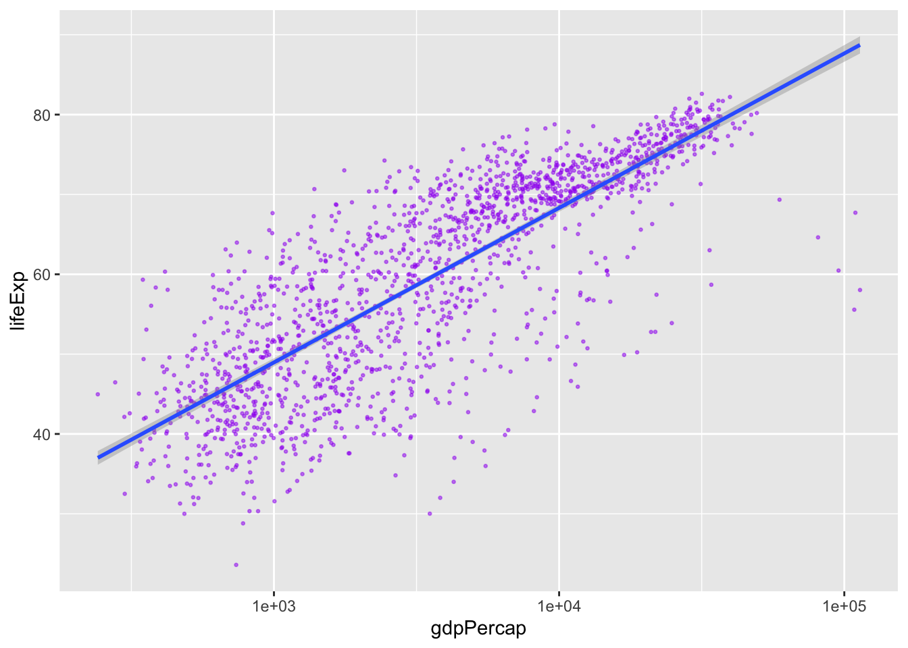
5.2 Challenge 4B
Challenge 4B: Changing shape and adding coloring
You can run the code below here on the website by clicking the Run Code button!
Modify the plot from 4A so points are a different shape and colored by continent with new trendlines.
Map continent to color.
You can learn more about shape codes here.
Adjust the existing plot by setting color and size inside geom_point() - both are outside of an aes() statement because in this case, we are not mapping a variable to an aesthetic, we are simply setting a parameter of the plot.
All points are now triangles.
gapminder |>
ggplot(aes(x = gdpPercap, y = lifeExp, color = continent)) +
geom_point(
shape = 17, # 17 is a closed triangle
alpha = 0.5
) +
scale_x_log10() +
geom_smooth(method = "lm", linewidth = 1) # smooth with a linear model ie "lm"`geom_smooth()` using formula = 'y ~ x'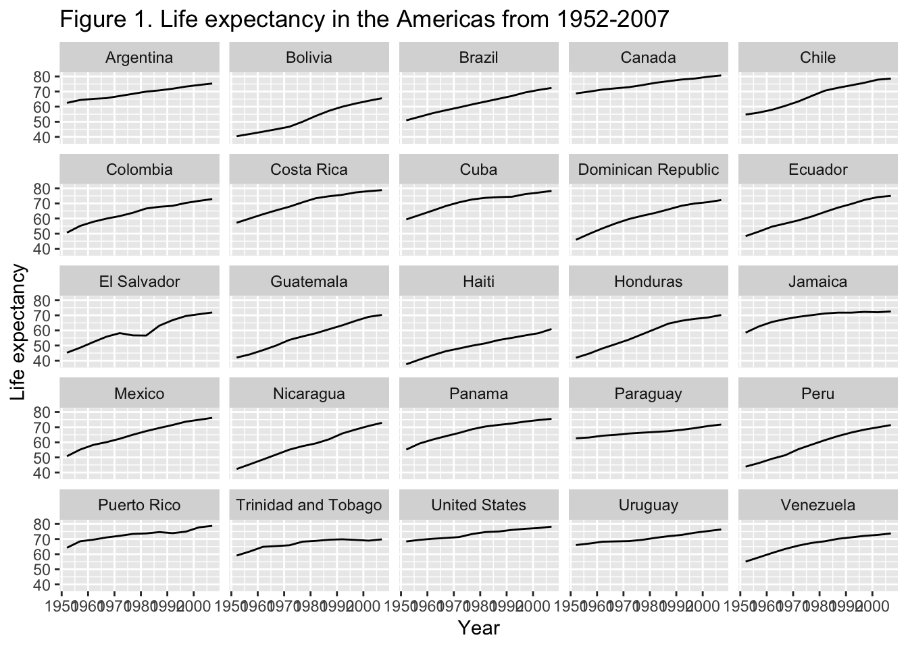
All points are now open triangles, we are setting continent to fill and making the outline black. Note that only shapes 21-25 can accept both a color (outside) and fill (inside). Otherwise, they only accept color.
gapminder |>
ggplot(aes(x = gdpPercap, y = lifeExp, fill = continent)) +
geom_point(
shape = 24, # open triangle
alpha = 0.5,
color = "black"
) + # color controls outside, fill controls inside
scale_x_log10() +
geom_smooth(method = "lm", linewidth = 1) # smooth with a linear model ie "lm"`geom_smooth()` using formula = 'y ~ x'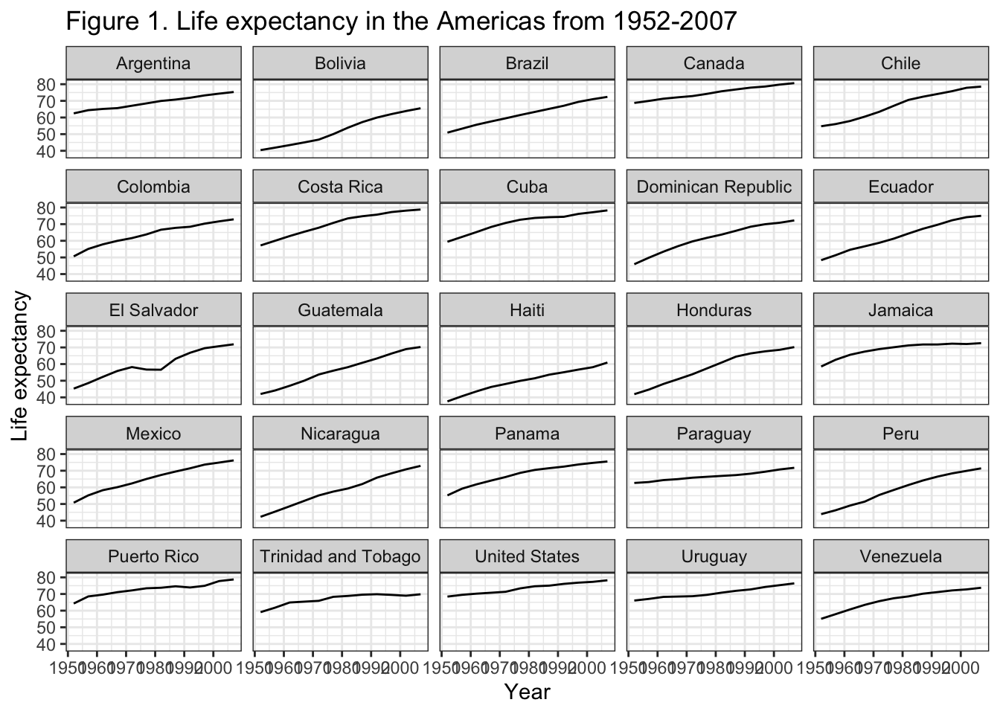
Mapping shape to continent
gapminder |>
ggplot(aes(x = gdpPercap, y = lifeExp, color = continent)) +
geom_point(aes(shape = continent), alpha = 0.5) +
scale_x_log10() +
geom_smooth(method = "lm", linewidth = 1) # smooth with a linear model ie "lm"`geom_smooth()` using formula = 'y ~ x'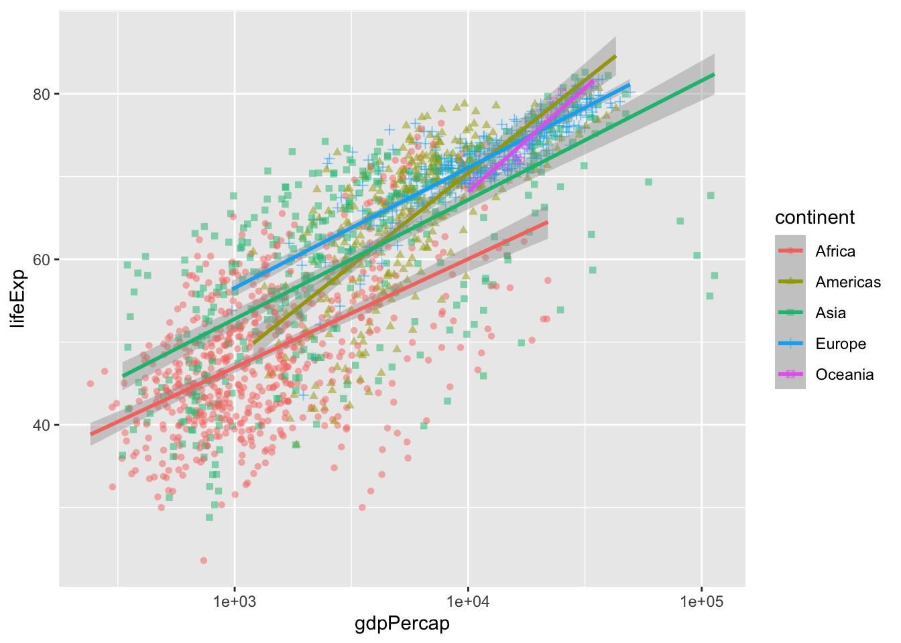
6 Multi-panel figures
Small multiples are a useful way to look at data across the same scale to understand patterns.
Let’s say we want to understand how life expectancy changes over time throughout the Americas? Instead of making an individual plot for each country, we can use facet_wrap() to have ggplot make our plots all at once.
First let’s use what Jelmer taught us to filter for only the observations from the Americas.
gapminder_americas <- gapminder |>
filter(continent == "Americas")Then, this new data frame gapminder_americas can be the data for our next plot. Let’s look first without faceting.
gapminder_americas |>
ggplot(aes(x = year, y = lifeExp, group = country)) +
geom_line()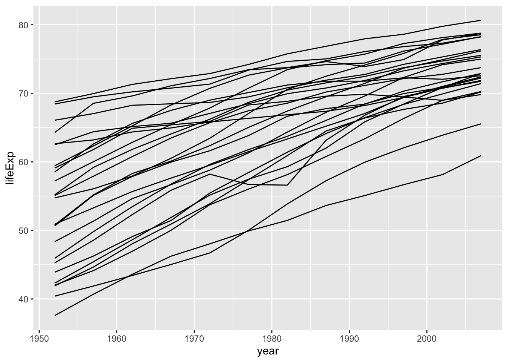
Faceting allows us to better see each country on its own.
gapminder_americas |>
ggplot(aes(x = year, y = lifeExp)) +
geom_line() +
facet_wrap(vars(country)) # make facets by country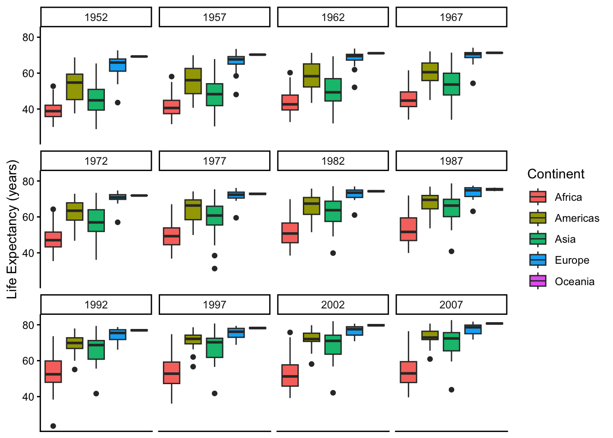
7 Modifying text
The plots we’ve made so far could really benefit from some better labels. We can set what we want or plot labels to be as arguments in labs().
gapminder_americas |>
ggplot(aes(x = year, y = lifeExp)) +
geom_line() +
facet_wrap(vars(country)) + # make facets by country
labs(
x = "Year", # x axis title
y = "Life expectancy", # y axis title
title = "Figure 1. Life expectancy in the Americas from 1952-2007", # main title of figure
)
8 Adjusting theming
We can also modify the non-data elements on our plot by controlling the theming. We can do this in two general ways:
- by selecting a pre-set (or “complete”) theme, functions start with
theme_*() - by modifying individual settings using the function
theme()
We will start with the pre-set themes by adding this function to the end of our ggplot code.
gapminder_americas |>
ggplot(aes(x = year, y = lifeExp)) +
geom_line() +
facet_wrap(vars(country)) + # make facets by country
theme(axis.text.x = element_text(angle = 45)) + # years on the x on a 45 deg angle
labs(
x = "Year", # x axis title
y = "Life expectancy", # y axis title
title = "Figure 1. Life expectancy in the Americas from 1952-2007", # main title of figure
) +
theme_bw() # change to a black and white theme
If we wanted to change the fonts, change the color the strip text (i.e., the text in the rectangle behind the names of the countries), the strip text background (i.e., the rectangle behind the names of the countries), adjust the x-axis year labels to be on an angle so they’re not so squished, we can do all that.
gapminder_americas |>
ggplot(aes(x = year, y = lifeExp)) +
geom_line() +
facet_wrap(vars(country)) + # make facets by country
theme(axis.text.x = element_text(angle = 45)) + # years on the x on a 45 deg angle
labs(
x = "Year", # x axis title
y = "Life expectancy", # y axis title
title = "Figure 1. Life expectancy in the Americas from 1952-2007", # main title of figure
) +
theme_bw() + # change to a black and white theme
theme(
text = element_text(family = "AppleGothic"), # change all fonts
strip.background = element_rect(color = "red", fill = "black"), # strip text outline red, fill black
strip.text = element_text(color = "white"), # strip text white
axis.text.x = element_text(
angle = 45, # years on the x on a 45 deg angle
vjust = 0.7
)
) # scoot year numbers down a lil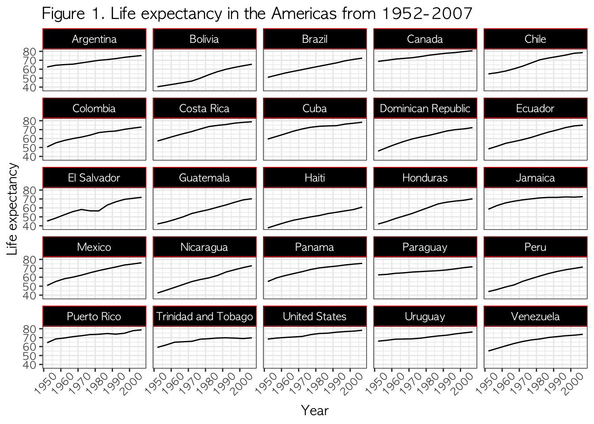
Note
Remember that your code is run from top to bottom, so if code lower down over-writes something that came above, the lower code will prevail.
9 Exporting a plot
Often we want to take our plot we have made using R and save it for use someplace else. You can export using the Export button in the Plots pane (bottom right) but you are limited on the parameters for the resulting figure.
We can do this with more control using the function ggsave().
First we will save our plot as an object using the assignment operator <-, here as life_exp_americas_plot.
life_exp_americas_plot <- gapminder_americas |>
ggplot(aes(x = year, y = lifeExp)) +
geom_line() +
facet_wrap(vars(country)) + # make facets by country
theme(axis.text.x = element_text(angle = 45)) + # years on the x on a 45 deg angle
labs(
x = "Year", # x axis title
y = "Life expectancy", # y axis title
title = "Figure 1. Life expectancy in the Americas from 1952-2007", # main title of figure
) +
theme_bw() + # change to a black and white theme
theme(
text = element_text(family = "AppleGothic"), # change all fonts
strip.background = element_rect(color = "red", fill = "black"), # strip text outline red, fill black
strip.text = element_text(color = "white"), # strip text white
axis.text.x = element_text(
angle = 45, # years on the x on a 45 deg angle
vjust = 0.7
)
) # scoot year numbers down a lilThen we can save it. I am indicating here to save the plot in a folder called results in my working directory, as a file called lifeExp.png. If you want your file to go within a folder, you have to first create that folder.
ggsave(
filename = "results/lifeExp.png", # file path and name
plot = life_exp_americas_plot, # what to save
width = 18,
height = 12,
dpi = 300, # dots per inch, ie resolution
units = "cm"
) # units for width and height
Note
To learn more about the arguments in ggsave() you can always run ?ggsave().
9.1 Challenge 5
Challenge 5: New plots with adjusted theming
You can run the code below here on the website by clicking the Run Code button!
Create some box plots that compare life expectancy between the continents over the time period provided. Try and make your plot look nice, add labels and adjust the theme!
The geom for making a boxplot is geom_boxplot().
Set labels within labs(). Adjust theming with theme(), and you can learn more about all the variables that can be set in theme() here. Check out the complete themes.
gapminder |>
ggplot(aes(x = continent, y = lifeExp, fill = continent)) +
geom_boxplot() +
facet_wrap(vars(year)) +
theme_classic() + # my favorite complete theme
theme(
axis.title.x = element_blank(), # remove x-axis title
axis.text.x = element_blank(), # remove x-axis labels
axis.ticks.x = element_blank()
) + # remove x-axis ticks
labs(
y = "Life Expectancy (years)",
fill = "Continent", # change the label on top of the legend
title = "Life expectancy across continents from 1952-2007"
) # add title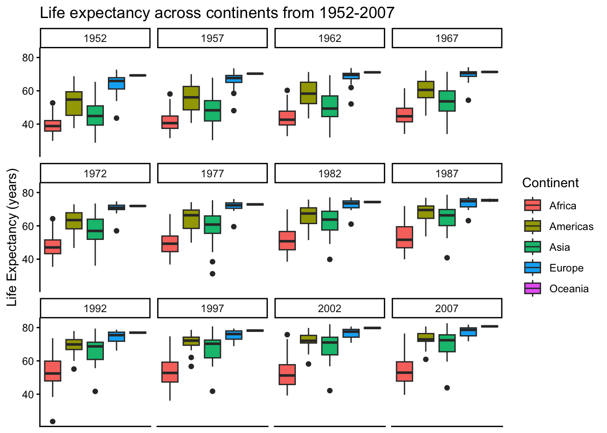
Footnotes
Or Click
File=>New file=>R Script.↩︎